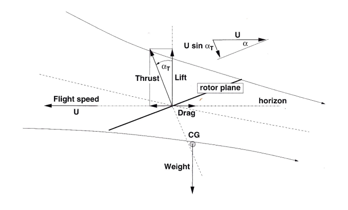

Helicopter Forward Flight
In order to translate into forward motion the rotor disk needs to be inclined so that rotor trust produces both vertical lift and a forward force.

The velocity perpendicular to the rotor disk will now be
$ U \sin(α_T) + v_i .$
The total velocity at the rotor disk will be
THRUST REQUIREMENTS
The
thrust produced will be equal to the change in momentum
where mass flow rate $m = ρ A V’ $
Similar to the hover case the work done by the rotor will be equal to the change in energy leading to the same result for slip stream velocity,
thus
If the tilt angle is small then $ \cos(α_T) = 1 $ so that
Substituting the solution for hover flight
leads to the following expression for $ v_i $
This expression will require an iterative solution for a given helicopter weight and forward speed.
For example, given a typical helicopter weighing 1400 Kg with rotor diameter 20m flying at sea level, with the rotor tilted at 5 Degrees, the required induced velocity produced by the rotor for level flight at varying forward speeds is shown in the figure below.
Increasing forward momentum means that the rotor is required to add less velocity to the flow to sustain thrust.
In the above example the rotor would be producing a forward component of thrustThis may or may not be sufficient to overcome the drag components so that a stable forward velocity is achieved. This can only be calculated once values for the total drag and power components have been established.
In forward flight the components of required power will be :
* Fuselage profile drag $P_U $
* Blade profile drag $P_{profile} $
* Additional power to cover transmission losses $P_x $
INDUCED FLOW POWER
Power is required to induce flow through the rotor to maintain rotor thrust
FUSELAGE PROFILE_DRAG
In forward flight the drag of the fuselage and its components causes an additional power requirement to be produced by the system.
Reference values of drag coefficient and cross-section area for differing fuselage shapes can be combined into a measure of “equivalent flat plate area (f)”.
BLADE PROFILE DRAG
In forward flight blades experience a variation in local velocity depending on their angular position around a cycle. Advancing blades on one side will experience a greater velocity than retreating blades on the other.
The drag on an element of blade will be
where $V_{local} $ is local chordwise velocity magnitude at radius r and sector $ Ψ $ location.
If tip speed ratio $ μ = U /{ΩR} $ is introduced, where U is forward velocity, $ Ω $ is angular velocity and R is rotor outer radius, then
The contribution of this element to total Profile required Power is
The full profile power will be found by integrating along the radius for each blade and then averaging over the full 0 to $ 2 π $ cycle. The result for one blade will be multiplied by the number of blades, N, to get the full requirement.
$$ P_{profile} = 1/{4 π} N c ρ C_D Ω^3 R^4 ∫_0^{2 π} ∫_0^1 (r/R + μ \sin(Ψ))^3 dr/R dΨ $$
The result of the integral $ ∫_0^{2 π} ∫_0^1 (r/R + μ \sin(Ψ))^3 dr/R dΨ $ is $ π/2 (1+ 3 μ^2) $
So that profile power required for forward flight is
This is an increase in the requirements compared to the hover result with an additional term based on the tip speed ratio.
The above estimate is based on an average blade drag coeffient $ C_D $ so may be inaccurate when there are large amounts of blade lag/lead and flaping motion required to main stability of the rotor in forward flight.
TRANSMISSION LOSSES
Additional power is required to cover gearbox transmission losses as rotor RPM is typically much lower than engine RPM in order to minimise tip losses due to compressibility effects. Also in order to maintain directional stability additional power is used for anti-torque systems such as tail rotors. The magnitude of these requirements is between 7% and 14% in addition to the aerodynamic requirements.